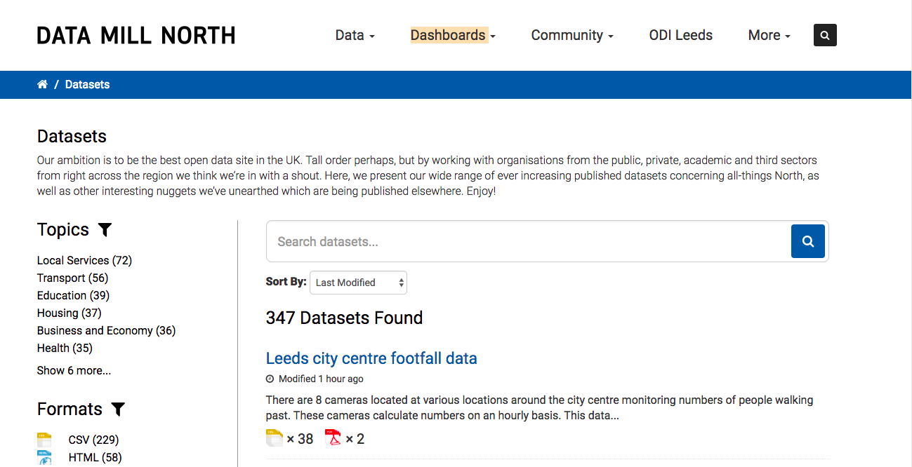
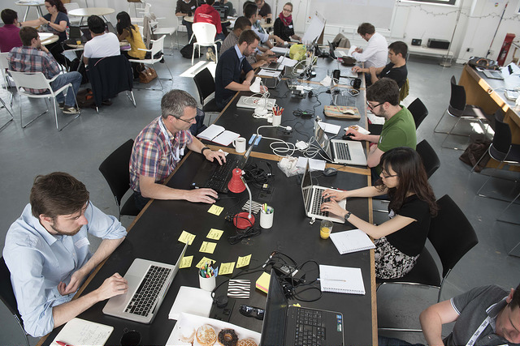
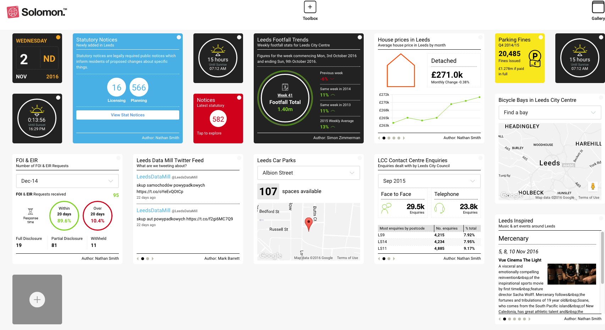

- Summary
- Facts and figures
- What was the challenge?
- How are Leeds City Council and ODI Leeds solving the problem?
- Creating the conditions
- Fostering open innovation with data
- The impact of the approach
- The impact on the public sector
- The impact on the private sector
- The impact on civil society
- What Leeds City Council and ODI Leeds learned
- Replicating success
- Next steps: planning future projects
- How to cite this case study
Summary
Leeds is a major UK city solving problems with data and open innovation. CC BY 2.0, uploaded by Paul Tomlin.
We need to do things differently ... there is no money and the world has changed. How do we access the power of digital and open data [to help solve our problems]?
– Paul Connell, founder of ODI Leeds
Facts and figures
Leeds is a major UK city facing a number of social, economic and environmental challenges, including the need to create and export innovative products and services in the face of local government budget cuts
To tackle Leeds' challenges, Leeds City Council, ODI Leeds and their partners have leveraged the power of open data and open innovation
They have done this by allowing anyone to publish open data to their platform, and ODI Leeds has convened data innovators around specific challenges
This process has improved efficiency and built new tools for the public sector, allowed large companies to benefit from data innovators and enhanced civil society’s access to information
The process for open innovation and building the data infrastructure to support it could help other cities, regions or countries to achieve similar results
Leeds’ potential and challenges
Leeds, in West Yorkshire, boasts the UK’s fourth largest urban economy by Gross Value Added (GVA). It is a major centre for financial and professional services, has a strong and emerging digital economy and a world-class research university. However, like every major global city in the 21st century it faces a number of social, economic and environmental challenges. Of particular concern is driving and exporting innovative products and services in the face of local government budget cuts.
To tackle a wide range of challenges requires the concerted effort from industry, citizens, government, academia and the third sector. Leeds City Council realised that the most effective way to foster this collective effort was through open data and open innovation.
Fostering open innovation
To begin with this effort took the form of a unique approach to open data publishing. By building and hosting the Leeds Data Mill, now Data Mill North, as a platform to which anyone could publish open data they began to create the core data infrastructure for open innovation. Public sector bodies, private sector businesses and third sector organisations all publish data to the platform, creating a collection of data that anyone can access, use and share.
Then ODI Leeds, an ODI Pioneer Node, was established to build a community and facilitate data innovators in using the data now available. Supported by the public sector, private sector and academia, ODI Leeds is the focal point of open innovation with data in Leeds. By building and iterating upon a three-stage open innovation process, ODI Leeds has helped a range of different organisations unlock value and create new products from their existing data resources.
The process involves defining a specific tangible and interesting problem, sharing data for exploration and prototyping and then convening a community to tackle the problem with the opened data.
The impact on Leeds
By adopting open data and an open innovation approach, Leeds has been able to motivate the public sector, private sector, academia and civil society to collaborate in solving collective challenges. As a result each group has benefited in its own way.
For the public sector open data has enabled local government organisations, such as Leeds City Council, to be more efficient in distributing information to residents and businesses. This includes reducing the amount of time spent answering Freedom of Information (FOI) requests, primarily around business rates. In addition, open innovation has provided them with new tools which also improve their own efficiency and cost effectiveness, for example in energy consumption from council buildings.
The private sector has also benefited from the open innovation process in Leeds. Established enterprises, such as Yorkshire Water, have gained prototype tools to help them meet core business challenges. The growing digital economy has generated new products and services, such as Leeds Art Crawl, which can be packaged up and sold to other city and regional governments. Residents have benefited from greater access to information and new tools, such as a bin days reminder, which enable them to better use public services.
Replicating Leeds' success
Each city around the world faces unique, and unique combinations, of challenges. The success of Leeds in creating a model for open innovation in a city context makes it ripe for replication. While their success has been partially driven by the combination of a receptive council, a reactive digital sector and an engaged civic community, it can be most accurately attributed to encouraging and communing these actors to work together, and providing the tools for them to do this effectively. In order to do this they have followed three key principles:
Releasing open data While open innovation can occur with data from across the data spectrum, open data that respects the privacy of individuals maximises the potential of the solutions developed and does so at the lowest cost to the publisher and data innovator.
Fostering open culture Open innovation relies as much on open culture as open data, being open by design and using open source tools creates a strong environment for open innovation. By enabling and encouraging anyone to publish data, cities can begin to create a rich data infrastructure on which solutions can be developed.
Convening an open community Convening a community to engage with the data itself is paramount to securing useful open innovation. Establishing an entity in the mould of ODI Leeds can play a huge part in the convening side of things. Key to the success of this entity is creating a neutral atmosphere in a distinct physical space, leveraging existing brands and pursuing commercial opportunities.
What was the challenge?
As one of the UK's largest cities Leeds faces a number of urban challenges. CC BY 2.0, uploaded by Mike Kniec.
Leeds is one of the biggest cities in the UK, located in West Yorkshire, boasting the UK’s fourth largest urban economy by gross value added (GVA). It was named as one of the ‘core cities’ of the UK Government’s Northern Powerhouse initiative.
Leeds’ potential
The economy of Leeds is worth £18 billion with a growth rate of almost 40% in the last decade. It is home to over 25,000 businesses, including being a major centre for financial and professional services which employ 46,000 people. In addition, it is also a centre for health care with four out of five NHS England national offices based there as well as the Health and Social Care Information Centre (HSCIC). Leeds has four universities, including the University of Leeds, which is consistently ranked in the top 20 universities in the UK and top 100 universities in the world.
The City of Leeds does not sit in isolation, however, but rather at the heart of the Leeds City Region, which encompasses the near continuous West Yorkshire urban development. The region is home to just over three million people and 109,000 companies generating £60.5 billion.
The challenge(s)
Despite its great promise, Leeds and the Leeds City Region face a number of key economic and social challenges – in particular, below UK average level of exports, innovation and startup survival and growth. Its lower national and global profile compared to other similar city regions stifles external investment. Unemployment, underemployment and a lack of key skills are also highlighted by observers. On top of this, there are the typical concerns of a large metropolitan area in the twenty-first century, including housing, transport, energy and sustainability.
At the same time, public authorities in the Leeds City Region, like all UK local governments, have faced central government budget cuts. Unlike some other large metropolitan areas, however, they have yet to achieve the level of devolution of authority to make certain decisions from UK central government to the city region they would have liked. Faced with theses cuts and a low level of devolved powers they are now required to increase efficiency while improving service delivery within many of the constraints of existing powers.
If the Leeds City Region is to live up to its potential, it must tackle all these issues head on and do so with dwindling central government funding.
How are Leeds City Council and ODI Leeds solving the problem?
Tackling the issues outlined above is not something that can be driven by local government alone. It requires concerted effort from industry, citizens, government, academia and the third sector. Leeds City Council (LCC) realised this early on, at the same time realising that success would rely heavily on building digital capacity and using open data and open approaches.
In the words of Paul Connell, founder of ODI Leeds, they realised that:
We need to do things differently... there is no money and the world has changed. How do we access the power of digital and open data [to help solve our problems]?
Creating the conditions
Building Leeds Data Mill
 Data Mill North, formerly Leeds Data Mill, is an award-winning platform that hosts open data from the public, private and third sectors.
LCC began, like many other councils, by setting up an open data portal supported by both the Department of Communities and Local Government (DCLG) and the Release of Data Fund. But they differed from others when they decided the platform should be more than a municipal data platform – that it should reflect the city as a whole, that it should be the ‘story of the city’. As a result, the Leeds Data Mill, now Data Mill North, was born in 2014 as a platform run by LCC that hosts data not just from the public sector but from anyone.
By not only allowing anyone to publish but encouraging them to do so, over 260 published datasets from almost 40 different publishers are now on the platform. These include over 190 datasets from LCC itself, as diverse as city centre footfall data, an inventory of all Leeds council houses and the location of street lights. The wide variety of other public sector bodies that have contributed datasets include the Environment Agency, DCLG and Otley All Saints CofE Primary School, who have uploaded data from a weather balloon flight.
Importantly, Data Mill North hosts data from the private sector. Businesses that have uploaded data include utilities providers Yorkshire Water and Northern Powergrid, the White Rose Shopping Centre and even Leeds United FC, who have uploaded their fixture list. The platform has also empowered local third sector organisations such as Leeds Housing Concern and Leeds Civic Trust to publish data. Leeds Beer Quest, a site that aims to review all the pubs and bars in Leeds, has uploaded their findings as structured data on the Data Mill.
Going beyond publishing
Despite being able to get this wealth of information published, LCC realised they had to do more, if open data was to live up to its potential in helping solve Leeds’ challenges. As Sandip Ghattaure, Open Data Project Officer at LCC and a key member of the Data Mill North team, puts it, "we don’t want to just publish, we want people to use [the data]".
In this vein, at the same time as setting up Leeds Data Mill, LCC offered an initial investment to help set up ODI Leeds. The aim was to connect the data being published with people across Leeds who would be able to do something with it. As Paul Connell explains:
Their job is to curate the Data Mill – make sure the data is there. Our job is to animate it and make things happen with it. This made the two initiatives interdependent from the very beginning.
ODI Leeds, was among the first ODI Nodes, having been established in November 2013. They opened their physical innovation and collaboration space at Munro House in the creative Leeds Art Quarter in May 2014. They focus on convening and collaborating with public and private sector organisations to solve local challenges through open innovation. In 2016, ODI Leeds was announced as one of the two ODI Pioneer Nodes in recognition of the depth and scope of their work in Leeds.
Creating and sustaining ODI Leeds
While LCC funded the initial establishment of ODI Leeds, it could not afford to be its sole funder. In order to help sustain ODI Leeds, it developed a flexible yearly sponsorship package to meet a range of different needs from a range of sponsors. This led to an additional nine sponsors from across the public, academic and private sector, as well as ongoing sponsorship from LCC. Each of them has their own motivations for sponsorship, including getting training, advice on policy, securing new clients and utilising external skills.
ODI Leeds took a lean startup approach from the start and without access to direct funding could not afford to employ a range of full-time staff. They did, however, realise they had to develop a disproportionate delivery capacity in order to field the numbers of enquiries they received. So the ‘ODI Leeds Challenge Team’ was created, formed of around 35 freelance data analysts, app developers, service designers and even small businesses interested in delivering projects as ODI Leeds Associates.
The challenge team works on a project-by-project basis. "We spin the right people up to deliver projects as [the projects] come", as Paul Connell puts it. Tom Forth, who heads the programme, explains that ODI Leeds “fills a big gap” between large organisations and freelance data innovators. This is because big organisations:
don’t know how to buy [these kinds of services], they don’t know what they are buying and they don’t even know how to release the data that is needed to build it.
ODI Leeds provides them with a point of access to the type of innovation with data they desire, through a procurement and contractual framework they are familiar with.
Fostering open innovation with data
Participants take part in #waterdata15 at ODI Leeds' innovation space. ODI Leeds.
ODI Leeds provides a whole range of services, including hosting events, running training courses and providing coworking space. However, their primary offering is empowering and enabling open innovation with data. In fact, Paul Connell says:
It’s not really about the data, releasing data is something that helps but… [what] we are mainly doing is innovation.
The process is one that they have been developing and iterating on since the early days of ODI Leeds. It is essentially made up of three different but interrelated stages: defining a problem, exploring the data and convening a community to tackle the problem using the relevant data.
Start with a problem
The first part of the open innovation process at ODI Leeds is defining a problem. Identifying and scoping the right problem is easier said than done. To be successful, the challenge needs to be targeted, important to the client and interesting to others. Each of these facets needs to be shaped before the challenge can be put to a wider audience. The final consideration is what data is available, although this is secondary to identifying a worthwhile challenge. This is one of the key roles ODI Leeds takes when driving open innovation.
For instance, when ODI Leeds was originally approached by Yorkshire Water, the Yorkshire Water team didn’t have a clear challenge. ODI Leeds encouraged them to present their various potential challenges at open meetings. Based on the feedback and levels of interest, Yorkshire Water realised that to be interesting and targeted they could choose to use their overall corporate challenge: to save five litres of water per person (customer) per day by 2020. If they meet this challenge, they will not need to build a new reservoir to meet demand from the next 70,000 new homes built in the Leeds area. Potentially avoiding this huge capital expenditure on building physical infrastructure made it worthwhile to invest in their data infrastructure and open innovation strategy.
Similarly, LCC faced an enormous challenge in the wake of budget cuts. One area that often arises in cost-saving exercises is energy efficiency because the council spends around £2m a year powering the 2,000 libraries, offices, schools and other buildings they run. Most of the ‘easier’ energy efficiency savings had already been made; however, the Sustainable Development Unit had significant amounts of data about the energy usage from these buildings. As Dr Tom Knowland, Head of Sustainable Energy and Climate Change, puts it, they "were sitting on this mountain of data but nobody had any time to do anything with it". Making the most of this data to secure the ‘harder’ savings provided a great opportunity to harness open innovation.
Share first, explore and then open
After defining a specific challenge and focus, the next stage involves exploring the data available to tackle it. It begins with the client and ODI Leeds identifying relevant data and sharing it with an ODI Leeds challenge team. The data is not normally made open at this stage because "this is massively challenging stuff for many organisations", explains Paul Connell. By getting organisations to share the data first they can “show them what we can do with it” by building prototypes and determine what data would be useful to then open, says Tom Forth. It is then easier for ODI Leeds to explain the potential to get even more out of that data if the client opens it up to others.
For instance, when working with Yorkshire Water, ODI Leeds put together a series of data collation and governance consultations using the challenge team. By examining the data Yorkshire Water had available, the ODI Leeds team were able to help them decide what data they could release on water usage, without potentially compromising the personal data of their customers given the potential for reverse anonymisation. Eventually they settled on postal district level identifiers, and have received no complaints from customers about the data since first publishing it in July 2015.
In some cases, the challenge team even build sustainable tools before the data is released, but this is often done "on the understanding that later the data would become open", explains Tom Forth. This was the case when working with the council on energy efficiency.
All we had to do was identify a set of data ... but part of the quid pro quo was that we had to commit to opening that data.
– Tom Knowland
Tom Knowland reports that LCC asked, “how can we use this data to help drive staff engagement, manager engagement in taking an interest in the Council’s energy consumption?" So LCC shared the energy consumption data with ODI Leeds, who pulled together a small challenge team to interrogate the data.
Convene and co-create
The final piece of the open innovation puzzle in Leeds is the convening of a diverse, interested and engaged community. Building on the strong digital economy in Leeds, ODI Leeds has engaged with a wide range of public sector, private sector, academic and civic organisations to bring this community together. These include not only local government and business sponsors but national public sector organisations such as DWP and the Environment Agency, academic institutions such as Leeds University’s Institute for Data Analytics and community groups such as Leeds Data Thing and Leeds Devops.
Key to convening this wide range of groups is a physical space for them to assemble. Paul Connell explains:
We knew we needed a physical space, and we did quite a lot of thinking about that – we knew it needed to be neutral, we knew it needed not to be partisan, we knew it had to be different.
The main reason behind this was is to make everyone feel equally comfortable and to get them “out of the [internal] mindset”, according to Sandip Ghattaure. This neutral physical space also helps to create a sense of community and opportunity, which is much more achievable face to face. As Stuart Childs, who attended #FloodHack16, explains:
In addition to attempting to solve real problems, [ODI Leeds events] are great for meeting others with a common interest ... There is nothing quite like face-to-face conversation and being in the same room as a group of enthusiastic and capable people.
While the sense of community and common interest often encourages people to attend multiple events, they must first be persuaded to attend one. For instance in the case of the Yorkshire Water project they held a series of 'warm-up' events to get people interested in the topic. In addition, they had to persuade people to give up their time and so they offered food and a variety of prizes to help incentivise participation. This led to between 60 and 70 people turning up over two days to the #waterdata15 DataDive. The more recent #FloodHack16 flooding project built on these successes and took things further by live streaming and recording the entire event.
The impact of the approach
 Bringing together a diverse range of people around specific problems has benefited the city of Leeds and its inhabitants. ODI Leeds.
By adopting open data and an open innovation approach, Leeds has been able to motivate the public sector, private sector, academia and civil society to collaborate in solving collective challenges. This has benefited each sphere in its own way, as well as convening a diverse community who recognise the benefits of working together.
The impact on the public sector
By allowing for the publication of open data, Data Mill North has enabled LCC to be more efficient in distributing information to residents and businesses. One example of this has been the reduction in FOI requests around business rates. Before publishing open data the council would receive four or five FOI requests a week from businesses. Each of these requests required around two hours of a council employee’s time to answer individually. By publishing business rates data on Data Mill North, they allow businesses to find the answer themselves, needing only to direct them to the portal once, which dramatically reduces the hours spent responding to enquiries.
This self-service model not only reduces the effort for the council, it also reduces the time taken by businesses to get the information they require. The team at Data Mill North use this example to encourage other public sector organisations to publish data, including West Yorkshire Fire and Rescue. Indeed, it is now standard procedure at LCC to publish any dataset resulting from an FOI request to the Data Mill North and maintain it going forward. This behaviour is part of a wider trend within the council, who have moved to an ‘open by default’ position.
Through open innovation
LCC have also benefited from the products of open innovation. The energy consumption project, for instance, yielded four prototypes, three of which were funded for further development. As Tom Knowland explains, "what the products are basically doing is helping people to visualise the data in a simple form, rather than being confronted by [loads of] spreadsheets." This helps drive behaviour change by making it easier for users such as “busy stressed-out managers” to quickly and easily understand the energy performance data. Tom Forth and his company Imactivate have helped develop these prototypes for council buildings and school energy use.
Openness goes beyond the data and innovation, right to the core of such projects. The products themselves are open source and publicly accessible as well, to make it easier for others to understand and replicate them. LCC are also working with the energy provider to get them to publish the data directly to Data Mill North as part of their contractual obligations. By contracting for open, LCC can avoid the cost and effort of publishing the data themselves, while still being able to use the feed.
This is only a first step for the Sustainable Development Unit, as Tom Knowland explains:
We are hoping that experience of how to work with open data [and] what it can do [will help us with] our next ambition, which is to do a citywide product with citizens ... Basically we would be using open data to help us with the behaviour change aspect of [all our] energy policy.
Through collaboration
LCC is not the only public sector organisation that has benefited from this approach. A number of other authorities and councils have taken advantage of ODI Leeds' expertise and network. One of these is the West Yorkshire Combined Authority, with whom ODI Leeds’ challenge team has been working on a process to publish concessionary travel data openly. This can then be adapted for the future publication of other datasets. Calderdale Council have likewise made use of the open data expertise available through ODI Leeds to help them build their own open data portal as part of their sponsorship.
However the majority of the benefit comes from the collaboration and peer learning between sponsors. As Paul Connell explains, "we’re not telling them [what to do], they are sharing with others." These types of relationships allow the public sector to avoid replication of effort. For example, when Highways England joined as a sponsor, Paul says:
They learnt so much from being at ODI Leeds for an afternoon with Leeds City Council, who basically shared with them their full governance and licensing [strategy] (which is also published on the Data Mill). [Because of this] a huge potential problem has been taken away already.
The impact on the private sector
The private sector has also benefited from the open innovation process in Leeds. This includes not only small data-driven startups but established enterprises, such as Yorkshire Water. In their work with ODI Leeds on DataDive #waterdata15 they were presented with six prototype tools for reducing consumer water usage. One Yorkshire Water participant is reported as saying, "we did more innovation over two days than we had over the last two years". They have worked with ODI Leeds to fund further development on at least one tool but “their innovation model hasn’t allowed them to access those opportunities yet”, says Paul Connell.
In addition, open data and open innovation are key to driving the emerging digital economy in Leeds to produce products and services that they can sell to others. These include the Leeds Art Crawl, commissioned by LCC through ODI Leeds and produced by WetGenes, a small Bradford-based digital agency. The Art Crawl collates, curates and maps crowdsourced pictures of public art in the city and publishes them as open data. Its success has allowed WetGenes to garner work both inside the Leeds City Region, in Bradford, and further afield in Dublin.
The self-service Solomon dashboard service created by HebeWorks powers the Leeds Data Mill dashboard. By taking this bespoke service and productising it, HebeWorks are able to sell it to other local and regional governents with open data platforms. The City Talking open data-driven newspaper has likewise been productised and it is now distributed in Sheffield, Manchester, York and Liverpool with local content.
Exporting the Data City
Other projects done in Leeds with potential commercial application both inside and outside the LCR are being taken under the Leeds Data City initiative. The Data City, born out of discussions at ODI Leeds, is a "collaboration vehicle for smart cities [that] allows us to do more with the network we are creating – it’s not just open data, it’s [emerging] technologies, it’s IoT," explains Paul Connell. It has allowed partners ODI Leeds and Bloom Agency, a digital agency that mainly works with social media, to partner on the digital asset map project. It helped ODI Leeds and Connected Digital Catapult Yorkshire to secure the IoT Boost project.
Leeds Data City is also aimed at wrapping up some of the prototype products and services created through open innovation with open data to be sold to other cities in the UK and abroad. These include Bus Start, which was developed as part of ODI HQ and Nesta’s Open Data Challenge Series. The tool allows users, primarily transport planners, to assess bus routes on their effiency at getting citizens to and from work. Given the new requirements of the buses bill going through parliament for open data about routing and timetables, the project has great potential for usage among local authorities throughout England.
Sustaining ODI Leeds
ODI Leeds itself has benefited from the drive for open innovation in Leeds. Despite being only two years old, it has already managed to build the capacity to address a whole range of challenges from utilities to transport, education to flooding. As Paul Connell puts it, "we’re just right at the start of something here". Testament to the benefits of their model for encouraging open innovation are their lifetime impact metrics. Between May 2014 and July 2016, they had held over 300 events in the space, attracting more than 2,200 attendees. In the same period they had managed to recognise over £200,000 in revenue.
The model also has benefits for their associates, who in addition to gaining work through ODI Leeds are able to win more work from their association. A number have reported being able to secure work using their ‘ODI associate’ credentials, which Paul explains is "fine – we’ve actually found that you do good things and good things come back". The team at ODI Leeds and their associates have also been able to spin out a number of side projects such as Our Data Mutual.
The impact on civil society
 Tools like the Leeds City Dashboard empower citizens to use open data directly.
The residents of Leeds have felt many benefits from the open innovation model in the form of improved access to information, better connections with services and better services themselves. For example, the Leeds City dashboard provides citizens with access to information generated from the open data on the platform. The customisable platform displays widgets on a wide range of different topics including air quality and footfall trends, a map of pedestrian accidents and the number of parking spaces available. Any user can create their own widget and enable others to use it. In addition, open data has been used to create things like the ‘air quality stories’ for The City Talking local magazine.
Open innovation has also benefited Leeds' residents. One early example was its use to tackle waste collection issues in Leeds. Tom Forth got access to the bin collection data to build a bin days reminder app to help citizens better understand waste collection cycles. As a result LCC began to publish the data openly, which led to others building their own apps.
The ODI Leeds challenge team have also been working with LCC to improve the school admissions process. The process has proved lengthy and costly due to the number of challenges made by parents whose child did not get into their first choice of school. In response, LCC wanted to make something that would help parents make more informed choices by providing more transparency and explanation around how school places are assigned. The potential impact of this is to save money, time and resource for both the council and parents by reducing the number of appeals.
What Leeds City Council and ODI Leeds learned
Every city around the world faces unique, and unique combinations, of challenges. However, using the process of open innovation to help solve each of these challenges is not specific to any particular city or context. The success of Leeds in creating a model for open innovation in a city context makes it ripe for replication.
Replicating success
To an extent the experience of Leeds has been lucky, given the combination of a receptive council, a reactive digital sector and an engaged civic community. However, most of the success can be put down to encouraging and communing these actors to work together, and providing the tools for them to do this effectively.
Releasing open data
All data exists across a spectrum of who can access and use it – from closed to shared to open. Subject to the need to respect privacy and data protection legislation, almost all data can be used as part of an open innovation programme to create new and interesting products and services. While there are many opportunities to share data in way that drives innovation, "open data allows you to do things quicker", as Paul Connell says. He adds that “it is probably the only way the public sector will be able to [drive solutions] within budget ... [Essentially] publish [data] and people will do stuff [with it] for free.” Tom Forth adds:
Generally I will work with data of any type – open [or shared] or closed. [But] it’s just cheaper to work with open data. It means I don’t have to worry about secure stores, I don’t have to worry about encryption.

Convincing city officials and private companies to open up their data is a massive challenge. Some of the biggest risks to open innovation projects come from these organisations being worried about reputational risk and ‘misuse’ of data. Overcoming these challenges – by demonstrating what others are capable of using their data for and the benefits of these solutions – is key to building a successful open innovation programme.
Fostering open culture
This drive to open goes beyond just data; at its core, open innovation relies on open culture. By adopting open by design and open by default practices when it comes to not only data but tools and processes, organisations can collaborate and benefit from the efforts of others. Such practices include inviting and encouraging anyone to publish data on a city platform, like with the Leeds Data Mill, creating a much richer data resource not just for data innovators but for the council itself. This is a move that can be easily replicated by any city government, when building an open data platform or improving an existing one, without significant extra investment.
Similarly, using open source tools and technologies builds not only on the existing work of others but allows others – both inside and outside of the project – to improve them. Again Paul Connell emphasises the cost benefits of such approaches: "not to say open source is [free or even] cheap but it's a way to maximise the opportunity".
Convening an open community
Convening a community to engage with the data itself is paramount to securing useful open innovation. Establishing an entity in the mould of ODI Leeds can play a huge part in the convening side of things. Paul Connell points to three actions that have been key in the success of ODI Leeds.
- Creating a neutral atmosphere in a distinct physical space Paul emphasises the usefulness of a physical space as a centre for collaboration to the extent that it is "what ODI Leeds brings". For innovation to occur, it is particularly effective to have people communicate face to face. More importantly, the neutrality of the space makes people more comfortable, getting them out of their usual environment but not forcing them to enter someone else's.
- Leveraging an existing brand "What people want in Leeds is to have the ODI here. So they have helped us create a mini version of ODI HQ", Paul explains. Having a recognisable brand and connection to organisations outside of the city have been useful for gaining connections and traction within Leeds itself and further afield.
- Pursuing commercial opportunities To be successful ODI Leeds has been forced to follow commercial incentives because people won’t pay for "intangible nice-to-haves". This has forced them to focus on practical, tangible and ultimately approachable challenges.
Next steps: planning future projects
The process of open innovation in Leeds has gone from strength to strength. The team has carefully iterated and improved their models for collaboration, not getting stuck into one particular way or method. The adoption of open models for innovation in Leeds, and more widely, is only set to grow. ODI Leeds is not only starting to host startups as part of ODI HQ’s startup accelerator programme but has recently been working with Highways England to help them deliver against their strategic objectives in an open and collaborative way.
Paul Connell believes his regular conversations with commercial and public sector organisations have begun to fall into a similar pattern:
'Will we be more open in five years' time?’
‘Yes.'
‘Will there be more data available?’
‘Yes.'
‘Can you afford to analyse it and create tools and products out of it?’
‘No.'
‘How are you going to do it? Can you do it on your own?’
‘No.'
‘Do you need help?’
‘Yes.'
‘Are you going to [be able to] procure all that help?'
‘No.'
It is clear that the process of open innovation in Leeds, in cities around the world, in fact at any level of geography, is not going to fall out of favour any time soon.
How to cite this case study
This case study was published in January 2017 by the Open Data Institute.
Please cite this case study as follows: Open Data Institute (2017) Case study: Open data in Leeds. London, UK. Available at case-studies/case-study-leeds
Author: Jamie Fawcett
Contact: [email protected]
Supported by